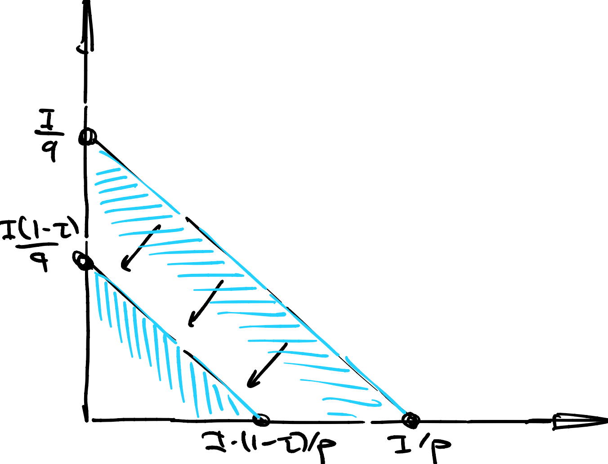
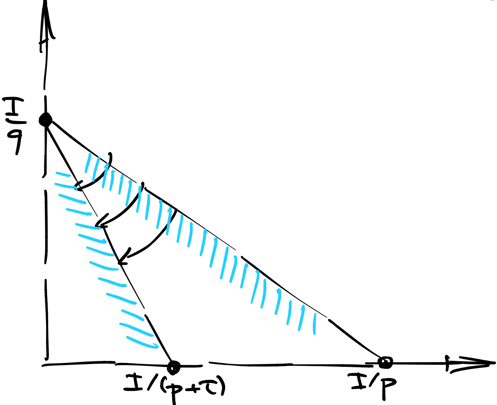

Четвертая лекция, часть 1#
Оптимальное налогообложение#
Исторически сложилось так, что государство финансирует свою деятельность, а также производство общественных благ за счет налогообложения. Есть три вида налогов:
подоходный фиксированный (паушальный, от нем. “Pauschale”) налог
подоходный пропорциональный налог
товарный налог
В разные периоды времени разные налоги пользовались популярностью.
Простота паушального налога в том, что его можно ввести практически моментально, и его имплементация сводится к знанию своих подданных в лицо. Однако вы не можете установить паушальный налог больше, чем, грубо говоря, минимальный прожиточный минимум. То есть, чтобы собрать большую сумму паушальным налогом, вам придется освободить какую-то часть населения от этих налогов. Как только вы начинаете дискриминировать, то есть говорить кому платить, а кому не платить налог, он становится в какой-то степени пропорциональным.
Обычный пропорциональный налог означает, что каждый агент платит пропорционально своему доходу. К примеру, когда король Ричард Львиное Сердце попал в плен, английской короне пришлось платить выкуп за счет временного пропорционального налогообложения размером 25%. Таким образом, удалось в короткие сроки собрать огромную по тем временам сумму, примерно составляющую трехгодовой объем английской казны.
Геометрически оба подоходных налога можно изобразить как параллельный сдвиг бюджетной линии, см. иллюстрацию.
{kind=link}
В современной экономике основную роль играет товарный налог: VAT в США и НДС в России. Идея этого налога в том, что за каждую единицу проданного товара или оказанную услугу предприниматель платит процент от добавленной стоимости.
Геометрически товарный налог отвечает за поворот бюджетной линии вокруг вершины, см. иллюстрацию.
{kind=link}
Товарный налог хорошо адаптируется под быстро меняющуюся экономику. Например, если какой-то город начинает экономически расти, растут требования к окружающей его инфраструктуре: дороги, дома для рабочих, школы и университеты и так далее. Но также растут продажи товаров и услуг и, соответственно, растут налоговые сборы, покрывающие инвестиции в инфраструктуру.
Задача налогообложения может быть сформулирована как либо максимизация чистых налоговых сборов, либо максимизация косвенной полезности при фиксированных налоговых сборах. На выбор, как правило, есть либо подоходный, либо товарный налог.
Налоги в Коббе-Дугласе#
Рассмотрим полезность Кобба-Дугласа
и введем налог размера \(\tau\). Наш анализ оптимального налогообложения будет сильно зависеть от того, с какой легкостью мы выписываем косвенную полезность.
Подоходный налог#
Если налог подоходный, то косвенная полезность и налоговые сборы будут равны:
Максимизация чистых налоговых сборов тут не представляет сложности – надо просто выставить \(\tau = 1\), то есть отобрать все деньги. Максимизация косвенной полезности при фиксированных налоговых сборах тоже тривиальна: \(\tau = T/I\).
Компенсирующие и эквивалентные вариации#
Мы освоили технику оптимального налогообложения. Это очень удобно, но иногда все равно приходится идти на попятную и точечно корректировать доход отдельным людям, возможно, из социально незащищенных слоев населения.
Поставим задачу вычисления денежной компенсации, которая сбалансирует повышение цен, связанное с налогообложением или еще чем-то. Сделать это можно двумя способами: при помощи компенсирующей и эквивалентной вариации.
Компенсирующая вариация#
Предположим, что полезность агентов была изначально на уровне \(\bar U_0\) и произошло смещение цен \(p \to p'\). Полезность агентов, конечно же, упала. Определим компенсирующую вариацию как изменение дохода, которое вернет их на изначальный уровень \(\bar U_0\).
Другими словами, государство как бы возвращает агентов на их стартовую полезность. Стартовая полезность – это статус-кво.
Эквивалентная вариация#
Предположим, что опять смещение цен \(p \to p'\) и что полезность агентов упала до уровня \(\bar U_1\). Определим эквивалентную вариацию как изменение дохода, которое было бы эквивалентно этому смещению цен, с точки зрения падения полезности.
Другими словами, государство как бы говорит: “если я верну все назад (и не заплачу вариацию), вы потеряете эквивалентно в полезности”. Здесь новая полезность – это статус-кво.
Подсчет вариаций через \(E\)#
Если вам комфортнее думать в терминах функции расходов, то все, что вам надо сделать, – это сосчитать уровни полезности до (для CV) и после (для EV) изменения цен и подставить в определение.
К примеру, в Леонтьевской полезности функция расходов выписывается быстро, если вспомнить, что левый и правый аргумент функции минимума обязаны давать одно и то же значение в оптимуме:
Далее, если цены перешли \((p,q) \to (p',q')\), то полезность перешла
Получается, что
Вот и все.
Подсчет вариаций через \(V\)#
Если вам комфортнее думать в терминах косвенной полезности, то CV и EV – это решения достаточно простых нелинейных уравнений:
Преимущество этого подхода в том, что сами уровни полезности вам считать необязательно. Можно сэкономить на выкладках.
К примеру, в полезности Кобба-Дугласа косвенную полезность можно запомнить с точностью до константы, которая все равно сократится в правой и левой части уравнения.
Для компенсирующей вариации:
Для эквивалентной вариации:
Первое приближение#
Посмотрим внимательно на компенсирующую вариацию:
Это читается так: если цена \(p\) выросла на \(X \%\), а цена \(q\) выросла на \(Y \%\), то компенсирующая вариация должна увеличить бюджет на \(\alpha X + \beta Y\) процентов в первом приближении.
Кстати, ни эквивалентная, ни компенсирующая вариации не зависят от нормировки полезности, поэтому вы можете выбирать удобную вам трансформацию. Вот и все.
Второе приближение#
Зафиксируем \(q\), и пусть меняется только цена \(p\).
Определим \(\delta p = p'-p\) как приращение цены. Мы хотим приблизить нелинейное уравнение
подставим все в экспоненту
разложим в ряд Тейлора до второго члена
То есть \(CV\) во втором приближении – это
Когда приращения достаточно большие (между 10 и 90 процентов), рекомендуется делать квадратичное, а не линейное приближение.
Если приращение больше 100 процентов, то никакое приближение не сработает, так как у \(\log(1+x)\) радиус сходимости равен единице.
Чистые субституты и комплементы#
Напомню, что первое определение субститутов и комплементов опиралось на перекрестные производные (маршаллианских) спросов по ценам. Несмотря на кажущуюся простоту и интуитивность этого определения, ничего не сдерживало нас от построения таких примеров, где товар \(х\) был бы субститутом к \(y\), при этом \(y\) был комплементом к \(x\).
Сейчас мы дадим альтернативное определение субститутов и комплементов. Для экспозиции предположим два товара \(х,y\) с ценами \(p,q\).
На первый взгляд, не совсем понятно, чем помогает замена Маршаллианского спроса на Хиксианский в определении. Однако, поскольку Хиксианский спрос - это градиент функции расходов, градиент Хиксианского спроса – это Гессиан функции расходов.
А Гессиан, он же матрица Гессa - симметричная матрица.
Другими словами, перекрестные производные Хиксианского спроса по ценам - симметричны и нет больше никакого противоречие. Чистая субститутабильность/комплементарность – это свойство пары товаров, неважно как эта пара упорядочена.
Кобб Дуглас#
Напомним, что на предыдущей лекции мы вывели Хиксианские спросы:
Тогда перекрестные производные элементарно выводятся
Леонтьев#
Напомним, что на предыдущей лекции мы вывели Хиксианские спросы:
Тогда перекрестные производные равны нулю.
Действительно, при фиксированной кривой безразличия изменение цен просто вращает бюджетную линию вокруг точки касания, а спросы при этом не меняются.
Почему ноль – это комплементы?#
Конечно, можно было сказать, что ноль – это что-то среднее между субститутами и комплементами, но исторически ноль закреплен именно за комплементами, поскольку полезность “уголки” скорее интерпретируется как “комплементы”.
Некоторые авторы предпочитают строгие неравенства во всех определениях, это дело вкуса.